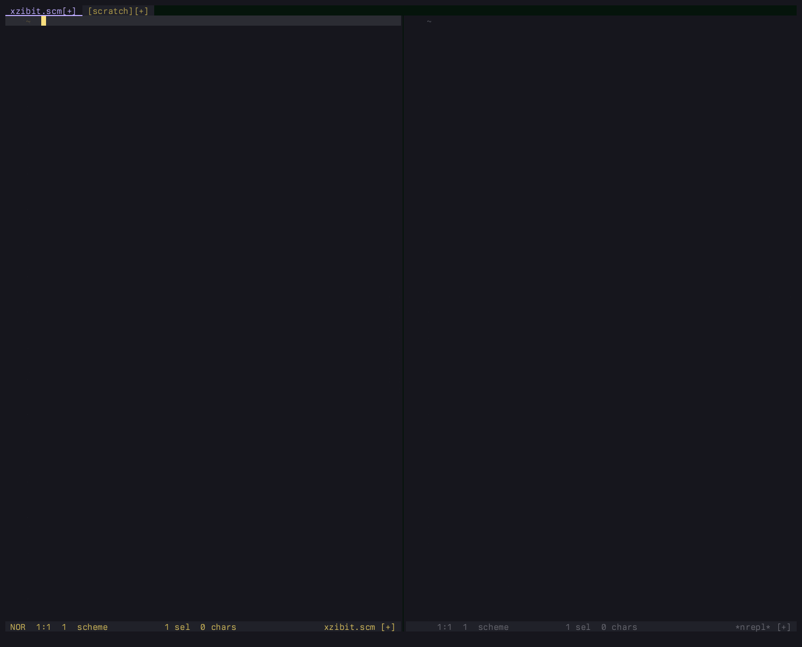
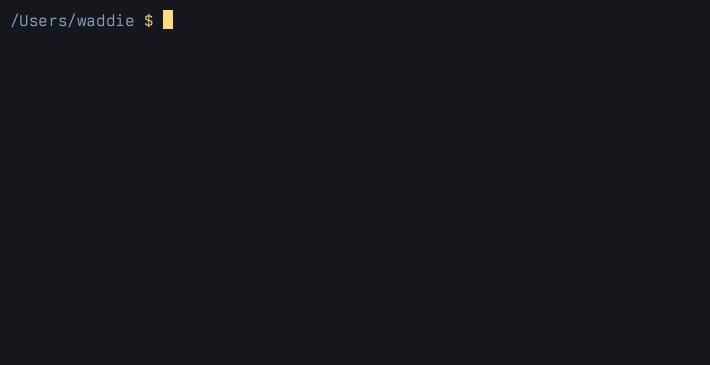
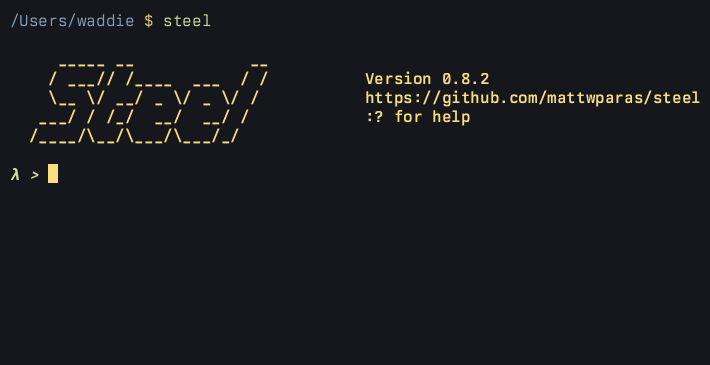
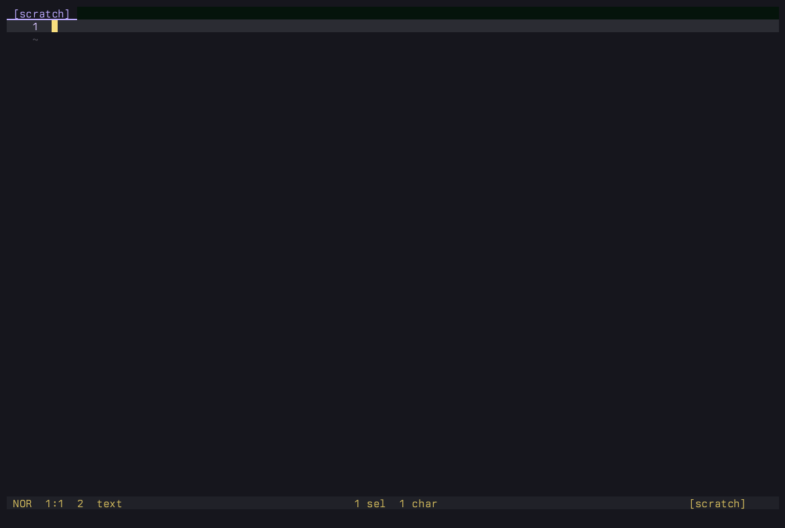
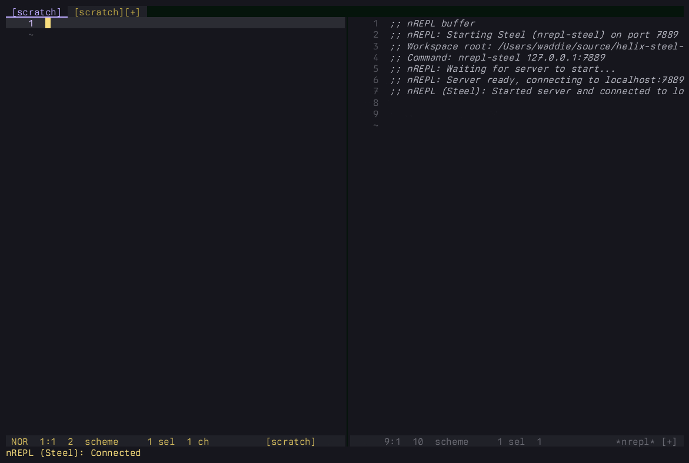
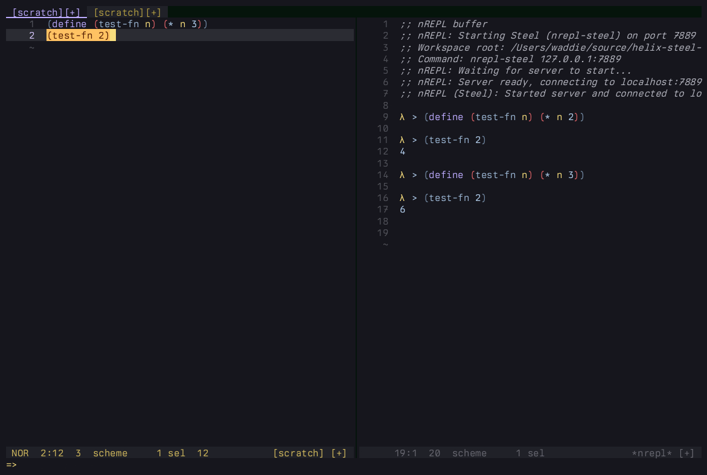
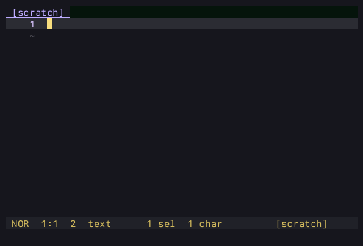
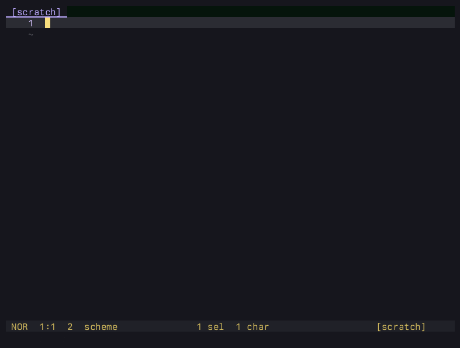

Up and running with Helix and Steel Scheme
As the Steel Scheme plug-ins pull request for Helix crawls ever closer to release (it’ll all be over by Christmas…), I thought it might be useful to write a short tutorial for Helix users who now find themselves fledgling Scheme programmers.
Building the Steel fork from source only takes a handful commands more than installing it via your package manager, it’s been stable for months now, and switching back should be seamless. So, if you’re parens-curious, there’s really no reason to wait.
I can’t teach you Scheme here but I don’t think I need to: as it’s been used as an educational language
for decades, there are plenty of freely available resources. Hopefully this is enough to get you up,
running, and over that initial hump of “what the hell am I even looking at” the first time you open a .scm file.

Prerequisites
- I assume you already have
gitinstalled. - You’ll need to have the Rust toolchain installed to build Helix.
- And you need to be comfortable in the shell, building software from source and potentially cleaning up afterwards manually.
Building the Steel fork
Development of the Helix plug-in system is currently still happening in Matthew Paras’s fork. These commands will clone the main Helix repo, add Matthew’s fork as an additional remote, then switch to the Steel branch:
git clone git@github.com:helix-editor/helix.git
cd helix
git remote add mattwparas git@github.com:mattwparas/helix.git
git fetch mattwparas steel-event-system
git switch steel-event-system
You can then build it:
cargo xtask steel
cargo will download the dependencies, build the hx, steel,forge and steel-language-server binaries and install them to ~/.cargo/bin.
Finally, make sure the cargo and steel bin directories are on your PATH, something like:
export PATH="$PATH:$HOME/.cargo/bin:$HOME/.steel/bin"
If you want to go back to mainline Helix, you can simply switch to origin/master and follow the build instructions on the website.
Additional tools
Next, we’ll install some tools to help with Scheme development:
cargo install schemat
forge pkg install --git https://github.com/waddie/nrepl-steel
forge pkg install --git https://github.com/waddie/nrepl.hx
forge pkg install --git https://github.com/waddie/paredit.hx
schematis a formatter for Scheme code.nrepl-steelis my nREPL server for Steel.nrepl.hxis my Helix nREPL client plug-in.paredit.hxis my Helix plug-in providing structural editing operations for Lisp-like languages, including Scheme.
Helix config
You might find it useful to enable rainbow brackets in your config.toml. Rainbow brackets colours each pair differently, making it easier to understand the nesting at a glance:
[editor]
rainbow-brackets = trueI’ve created a repo with a minimal Steel Scheme config for Helix. It initialises the plug-ins we installed
above, and sets up the default key bindings. Copy helix.scm, init.scm and the cogs folder to your ~/.config/helix and restart Helix.
With that, you should be all set.
So, what’s a REPL?
REPL stands for Read-Eval-Print-Loop. Just like with node or python, running the steel executable with no parameters
drops you into a prompt where you can enter and evaluate code:

Unlike those languages, Scheme is highly conducive to interactive, exploratory
programming in this environment. For example, modern JavaScript uses a lot of const. In the REPL, this tends to result in mistakes being permanent
until you quit and restart – modifying idiomatic code after submission is impossible.
In Scheme though, almost anything can be redefined on the fly:

But the real superpowers are acquired when you connect the REPL to your editor…
nREPL
The command-line REPL is cool, but the editing experience obviously leaves a lot to be desired, and none of the state will survive a restart. In real life, nobody develops software this way. You write code in your text editor, and that’s ideally where you would interact with the REPL too.
nREPL is a standard protocol enabling REPL-like integrations between clients and servers.
The nrepl-steel server and nrepl.hx plug-in we installed earlier
enable both ends of this communication.
Open Helix, set the buffer language to Scheme, then type <space>.n.J to jack-in. Select the “Steel (nrepl-steel)” option from the picker.
You should see Helix open a new split buffer and a series of commented messages as the server is started and Helix connects:

Once you’re connected, you can evaluate code from any buffer by selecting it and running :nrepl-eval-selection (<A-ret>) with the supplied key bindings. Our previous CLI example in Helix:

So, we’re using a Helix plug-in (written in Scheme) to start and connect to an nREPL server (written in Scheme) and then using it to evaluate Scheme.
nrepl.hx aims to be discoverable, in the Helix tradition: you’ll find a menu of evaluation commands in <space>.n, including evaluating the entire buffer or multiple selections.
When you’re finished, type <space>.n.D to disconnect, and answer “y” at the
prompt to kill the server.
Lookup
Steel is approximately the Scheme R5RS standard, which is exceptionally well-documented. But on first contact with a new programming language, you often don’t know what you don’t know.
The lookup picker can help you explore the symbols available in your running instance. Think of it
like rummaging through your toolbox. Type <space>.n.l in normal or select mode to open it.

Hitting enter will paste the selected symbol at your cursor.
First steps with Scheme
Scheme is a minimalist functional and imperative programming language in the Lisp family.
If you’re coming from more popular languages like TypeScript or Python, the first things that may trip you up are all the parentheses, and the order things go in.
For example, in those languages, arithmetic is in terms of infix operators: you write 1 + 2.
In Scheme, there are no operators, only functions. A pair of parentheses is a function call, with the function name at the front and its arguments following:
; the operator comes first, inside the parens
(+ 1 2) ; => 3
(* (+ 1 2) 3) ; => 9
(+ 1 2 3 4) ; => 10There’s no operator precedence to memorise, because the nesting says exactly what happens
first. And since + is a variadic function, it happily takes as many arguments as you like.
You name things, including functions, with define. A function definition looks just like a function call turned inside out: (define (name args…) body):
; name a value
(define x 10)
; define a function: (define (name args...) body)
(define (square n)
(* n n))
; call it the same way – name first
(square 5) ; => 25Notice that there’s no explicit return. In Scheme, a function’s value is simply its last evaluated expression. And calling your own
function works exactly like calling +: the name goes first, the arguments follow. That’s essentially the whole syntax, so once (+ 1 2) stops looking strange, you can read almost any Scheme.
A couple of non-obvious tips
Lisp-like languages can be a real culture shock at first. Here are a couple of tips that can make all those parentheses easier to deal with.
Firstly, although we talk about parentheses, Scheme actually treats paired brackets identically to parens. That is, these are equivalent:
(let ((s (fizzbuzz n)))
(display s))
; with brackets
(let [(s (fizzbuzz n))]
(display s))
Used consistently, dropping in some brackets can provide enough visual texture to help orient you in your code.
Secondly, the threading macros, thread-first (->) and thread-last (->>) let you avoid deeply-nested code by writing each level as a sequential operation, for similar ergonomics
to pipe operators in some other languages. The result of each step will thread into the next call in the
first or last position respectively.
Again, these are equivalent:
; area of a circle
(* 3.14159 (expt r 2))
; thread-first
(-> r
(expt 2)
(* 3.14159))
(Strictly speaking, -> and ->> are aliases for macros called ~> and ~>>. The hyphenated aliases are standard in languages like Clojure and are, in my opinion, slightly easier
to type.)
Structural editing
If you’re new to Lisp-like languages, navigating deeply-nested S-expressions can be a challenge. Fortunately, Helix has a lot of tools that enable editing code as a tree rather than plain strings.
First class support for tree-sitter lets you move around and select nodes in the tree. Four commands to get you started:
:select_next_sibling, <A-n> | Select next sibling |
|---|---|
:select_prev_sibling, <A-p> | Select previous sibling |
:expand_selection, <A-o> | Expand selection |
:shrink_selection, | Shrink selection |
Note that these work with any language with tree-sitter support, so learning them definitely won’t be a waste of time. But they’re especially useful in a Lisp.
The match menu
The match menu commands are useful for jumping to the matching parenthesis in a
pair (mm) and for adding, replacing or deleting parens around a selection, so you don’t need to worry about
finding the right spot to add/delete one:

match to change parenthesesParedit
The final plug-in we installed back in “Additional tools” was paredit.hx. It uses tree-sitter to provide structural editing operations like barfing and slurping (pushing or
pulling elements into/out of the front/back of the current list), splitting/joining lists or strings, and
splicing (a shorter way of achieving the match/delete operation above).
These operations all help you edit code without having to manually edit or move parentheses:

With the supplied bindings, you’ll find the Paredit options in minor mode menus under <space>.> and <space>.< for forward and backward operations respectively. But that’s mainly for discoverability. If you like
them, you may want faster access. Check out the repo for another possible setup.
Further reading
These are the main resources I learned from:
- Dorai Sitaram’s Teach Yourself Scheme in Fixnum Days is a free introductory book for the Scheme language.
- Daniel P. Friedman and Matthias Felleisen’s The Little Schemer is a gentle but rapidly escalating introduction to recursion in the form of a Socratic dialogue. It may not prove super-helpful when you’re writing your Helix config, but it’s one of those rare books that can change the way your brain works.
- I’m not sure how much of the code in How to Design Programs, 2nd. Ed. will work with Steel. I think back in the day I worked through the first edition in Racket, before it was even called Racket. But whatever version of Racket it uses now, most of the skills will transfer.
- The main Steel repository has a great collection of example code to learn from.
- Helix Plugins maintains a list of plug-ins that have been built for the new system.